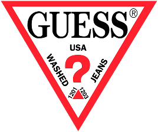
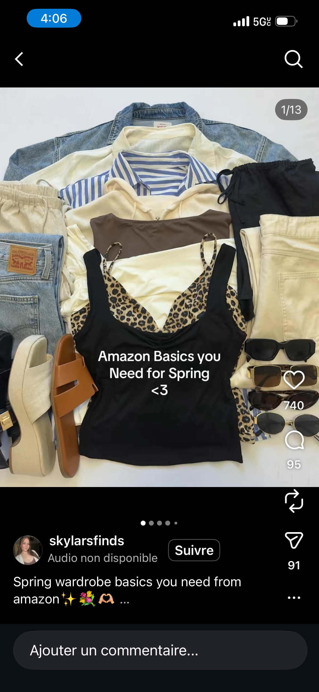

What is fast fashion?
Fast fashion refers to the rapid production of inexpensive, trend-driven clothing. A garment is designed, manufactured, and placed in stores within weeks, but is then quickly replaced by the next trend.




How did we get here?
Social media, influencer culture, and algorithmic trend cycles supercharged demand for cheap clothing.

Where we are
We are producing more garments than ever before. However, we are also throwing away more garments than ever before.
What are we wearing?
Most fast fashion garments are made from synthetic fibres - such as polyester, elastane and nylon — that can take hundreds of years to break down.
Impact of the materials
Not all fibres are equal. Hover over each textile below to explore how it ranks across seven environmental impact categories — from climate change to water use.
Every wash pollutes
When synthetic garments are machine-washed, they shed microscopic plastic fibres that pass straight through water-treatment plants and into rivers and oceans.
On average, 500,000 tons of microplastics are released into the ocean each year from washing synthetic textiles — the equivalent of 50 million plastic bottles.
All this, for what?
The average consumer now buys 60 % more clothing than 15 years ago, but keeps each item for only half as long. A garment is typically worn just 7–10 times before being thrown away.
Thrown away
What we can do
The fashion industry's footprint is enormous, but individual choices add up. Here are a few ways to reduce your impact.
- Buy less, choose well. Invest in quality pieces you will actually wear.
- Shop secondhand. Thrift stores and resale platforms extend a garment's life.
- Repair, don't discard. A small mend keeps clothes out of landfill.
- Wash less & cold. Reduces both energy use and microplastic shedding.
- Support sustainable brands. Vote with your wallet for transparent supply chains.
Further reading & resources
- Good On You — brand ethics ratings
- Fashion Revolution — transparency advocacy
- thredUP Resale Report — secondhand market data